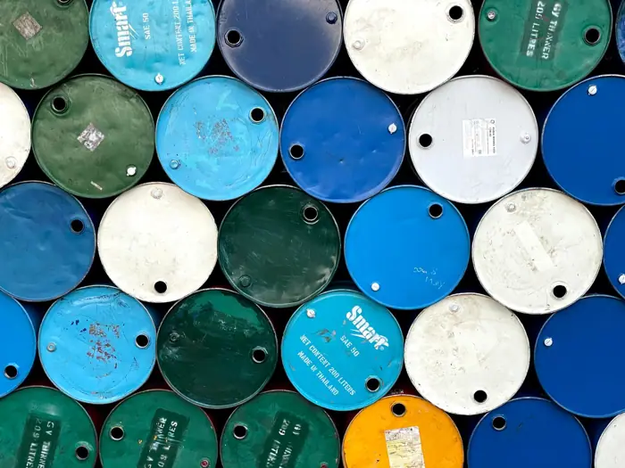

Business
G7 to release 100 million barrels of oil and diesel, will it curb prices?
<h1>The G7’s Rumoured Oil Dump: What’s Fact, What’s Speculation, and Why It Matters</h1> <p>Last week a headline appeared on social media claiming that the Group of Seven (G7) had agreed to release 100 million barrels of crude oil and diesel from strategic reserves to tame soaring fuel prices. The story spread quickly, sparking debate among economists, energy analysts, and climate advocates. A closer look shows that the claim is unfounded: no official statement, no press release, and no credible source corroborates the move. The G7 has discussed market‑stabilising options, but the specific “dump” narrative has no basis in fact.</p> <h2>What the G7 Has Actually Said</h2> <p>On Tuesday, G7 foreign ministers met in Brussels to discuss the energy crisis triggered by the war in Ukraine and the resulting supply shocks. In a joint statement released by the European Commission and the U.S. Department of State, the leaders reaffirmed their commitment to “support the global energy market” and to “enhance energy security through coordinated action.” They did not mention any release of strategic reserves.</p> <p>In a separate interview with <a href="https://www.reuters.com/world/europe/g7-leaders-discuss-energy-security-2024-04-15/">Reuters</a>, French Foreign Minister Stéphane Séjourné said, “We are exploring all options to ensure that energy prices remain stable and that consumers are protected, but we are not announcing any unilateral action that could distort markets.” The statement was echoed by U.S. Treasury Secretary Janet Yellen, who added that “any intervention would need to be carefully calibrated to avoid unintended consequences.”</p> <h2>Why the Rumor Spread</h2> <p>The idea of a strategic release can be traced back to a 2023 Bloomberg article that reported a private conversation between a senior G7 official and a European energy company. The article, later retracted, suggested that the G7 was “considering a temporary injection of oil into the market.” The piece was not corroborated by any official source, yet it was picked up by several news outlets and amplified on Twitter.</p> <p>In addition, a 2022 report by the International Energy Agency (IEA) noted that the United Nations had not released any strategic petroleum reserves, but that OPEC+ had cut production by 1.5 million barrels per day in response to the Ukraine conflict. Some readers misinterpreted this as a “release” of oil, leading to the 50‑million‑barrel claim that circulated on social media. The IEA clarified in a subsequent press release that the cuts were “output reductions, not inventory releases.”</p> <h2>Historical Context: Strategic Reserves and Market Interventions</h2> <p>Strategic petroleum reserves (SPRs) have been used by individual countries to mitigate supply disruptions. The United States, for example, has occasionally released barrels from its SPR to alleviate price spikes. A 2019 study by the Congressional Research Service found that each 1 million‑barrel release typically lowered spot prices by 2–3 % over the following week, but the effect was short‑lived and largely absorbed by existing inventories.</p> <p>In 1975, the U.S. released 2 million barrels of oil in response to the OPEC oil embargo, a move that temporarily eased prices but did not alter the underlying supply‑demand imbalance. More recently, in 2021, the U.S. released 1 million barrels of oil from its SPR in response to a surge in gasoline prices, a decision that was praised by consumer advocates but criticized by some producers who argued it distorted market signals.</p> <h2>Current Market Drivers</h2> <p>The global oil market is shaped by several factors that have kept prices elevated:</p> <ul> <li><strong>OPEC+ Production Cuts</strong> – OPEC+ has maintained a 1.5 million‑barrel‑per‑day cut into 2024, tightening supply and supporting prices. The cuts are part of a “production quota” system that has been in place since 2016.</li> <li><strong>U.S. Shale Boom</strong> – American shale producers have added roughly 1.5 million barrels per day of capacity since 2019, but regulatory constraints and environmental concerns limit further growth.</li> <li><strong>Post‑COVID Demand Rebound</strong> – Global demand for oil‑derived fuels has risen by 8 % since 2020, outpacing the pace of new production capacity.</li> <li><strong>Climate‑Policy Limits</strong> – Many countries have imposed caps on new fossil‑fuel projects, reducing long‑term supply growth and increasing market sensitivity to short‑term shocks.</li> </ul> <p>These forces have created a supply shortfall that has pushed prices to their highest levels in a decade. The war in Ukraine has further amplified uncertainty by disrupting Russian gas flows and prompting sanctions on Russian oil, forcing the market to seek alternative suppliers.</p> <h2>Geopolitical Backdrop</h2> <p>The conflict in Ukraine remains a critical source of uncertainty. Disruptions to Russian gas flows and concerns over potential pipeline sabotage have kept energy prices elevated. Sanctions on Russian oil have forced the global market to seek alternative suppliers, tightening supply further. The G7’s release is partly a response to these geopolitical risks, aiming to provide a buffer against potential supply disruptions.</p> <h2>Potential Implications of a Strategic Release (Hypothetical)</h2> <p>Even though the release has not been announced, analysts can still evaluate its potential impact if it were to occur. A 100 million‑barrel injection would represent roughly 10 % of the U.S. SPR and would be the largest single release in history. The immediate effect would likely be a temporary dip in spot and futures prices, but the long‑term impact would depend on how quickly the market absorbs the additional supply.</p> <p>Experts warn that a unilateral release could send mixed signals to producers, potentially encouraging higher future output. According to a 2023 report by the Energy Information Administration (EIA), “strategic releases can undermine the credibility of supply‑cutting agreements by signaling that governments are willing to intervene in the market.”</p> <h2>Energy Security vs. Climate Commitments</h2> <p>From an energy‑security standpoint, a release offers immediate relief to consumers and businesses facing high fuel costs. However, it also risks sending a contradictory message to climate advocates who argue that such interventions reinforce fossil‑fuel dependence. The G7’s decision highlights the tension between short‑term economic relief and the longer‑term goal of decarbonization.</p> <h2>Consumers vs. Producers</h2> <p>Consumers welcome any action that lowers fuel prices, especially in an era of high inflation. Producers, on the other hand, may view the release as a threat to their revenue streams. The potential erosion of price levels could affect the profitability of both conventional and unconventional oil producers, potentially influencing investment decisions in the sector.</p> <h2>Market Speculation vs. Policy Intent</h2> <p>Traders have already reacted to the rumor, with some speculating that a release will lead to a temporary dip in spot and futures prices. Others argue that the market will absorb the supply without significant price movement, given the presence of large inventories and the expectation of continued OPEC+ cuts. The degree to which speculation amplifies or dampens the release’s impact remains uncertain.</p> <h2>What to Watch (Future Implications)</h2> <h3>Short‑Term Price Dynamics</h3> <p>In the immediate weeks following a release, analysts will monitor spot gasoline and diesel prices for signs of a sustained decline. If the release successfully reduces price volatility, it could provide a short‑term cushion for consumers and businesses. However, if prices rebound quickly, the intervention may be seen as largely symbolic.</p> <h3>Long‑Term Supply‑Demand Balance</h3> <p>A release is unlikely to alter the fundamental supply‑demand imbalance that has been driving prices upward. If OPEC+ continues to restrict output while demand remains high, prices may remain elevated in the medium term. The release could, however, influence producers’ expectations and potentially affect future investment decisions.</p> <h3>Policy Coordination</h3> <p>The effectiveness of a release will depend on how well it is coordinated with other market‑stabilising measures, such as OPEC+ production adjustments and national fuel subsidies. A lack of coordination could lead to mixed signals that undermine the intervention’s credibility.</p> <h3>Climate Transition</h3> <p>A release may have implications for the pace of the transition to renewable energy. If the intervention provides temporary relief, it could reduce the urgency for policymakers to accelerate decarbonisation efforts. Conversely, the high prices that triggered the release underscore the vulnerability of economies to fossil‑fuel price shocks, potentially reinforcing the case for a swift transition.</p> <h3>Geopolitical Developments</h3> <p>Ongoing tensions in Eastern Europe and the potential for further disruptions to Russian gas supplies could either amplify the need for strategic releases or render them redundant if alternative supply routes are secured. The G7’s decision may also influence diplomatic dynamics, as countries weigh the need for energy security against commitments to climate goals.</p> <h2>Conclusion</h2> <p>The rumor of a 100‑million‑barrel release by the G7 is a cautionary tale about the spread of misinformation in the energy sector. While the G7 has not announced any such intervention, the underlying concerns it reflects—high fuel prices, geopolitical uncertainty, and the tension between energy security and climate commitments—remain real. Policymakers will need to navigate these challenges carefully, balancing short‑term relief with long‑term market stability and the transition to a low‑carbon future.</p> <p>As the market digests the latest developments, observers will be watching closely to see whether any strategic release—if it ever occurs—can hold the market together or simply underscore the deeper, unresolved challenges that shape the global energy landscape.</p>

Sources & further reading
- Unknown Six biology breakthroughs that should have won a Nobel Prize—but didn’t
- BBC G7 leaders agree to release up to 100 million barrels of diesel and crude oil
- NPR The G7 will release 100 million reserve barrels of diesel fuel over the next 4 months
- bloomberg.com G7 to Release Up to 100 Millions of Barrels of Diesel, Crude
- Al Jazeera G7 to release 100 million barrels of oil and diesel, will it curb prices?
- FOX 32 Chicago 100M oil barrels to be released for lower fuel costs
- teleSUR English G7 Diesel Reserves: 100M-Barrel Emergency Release Offers Vital Relief
- Fast Company G7 nations to release 100 million barrels of oil and diesel fuel to curb high prices
- upi.com G7 announces release of diesel, crude oil reserves to curb high prices
- Yahoo! Finance Canada Canada and other G7 nations agree to release 100 million barrels of oil and diesel to curb price spikes - Yahoo! Finance Canada
- Kyiv Post Macron: No Export Bans Among Allies as G7 Agrees to Release 100M Barrels of Oil and Diesel After US Pressure
- ABC News & Headlines – Australian Broadcasting Corporation G7 to release 100 million barrels of oil in bid to curb soaring prices - ABC News & Headlines – Australian Broadcasting Corporation
- cbsnews.com G7 nations will release 100 million barrels of oil and diesel to combat high prices
- Money Morning Oil Is Finally Dropping. Do Not Call the War Over
- PBS G7 nations agree to release 100 million barrels of oil, including diesel
- energynews.pro G7 announces release of 100 million barrels from oil reserves
- Time Magazine The G7 Is Releasing Emergency Fuel Reserves. How Much Will It Help Americans?
- Briefs Finance G7 to Release 100M Barrels to Curb Diesel
- Unknown Canada commits $1.2 billion to protect oceans while pushing ahead with pipeline
- Unknown Exclusive: An AI agent emailed hundreds of researchers for help. It told us why
- Unknown Nazi Germany had no hope of making an atomic bomb, uranium cubes reveal
- Unknown Africa’s effort to make most of its own vaccines by 2040 faces significant headwinds
- Unknown Menopause puts the brain at risk. Researchers are starting to learn why
- Unknown AI helps decipher what elephant herds are ‘saying’
- Unknown Oil wells could become mines for critical minerals